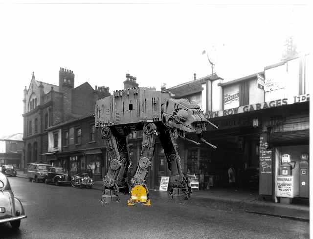

|
FIRST EDITION | MONDAY 18th JANUARY | ||||||||
| MORNING FIST | ||||||||||
| ||||||||||
| ||||||||||||||||||
The Revolution Spreads
Comrades across the land tell of the struggle
Chiswick REVOLUTION SABOTAGED BY TRAITORS
Comrade Winterstein, local commissariat for the christmas raffle, reports from exile.
It was going so well. The Turnham Green Traders Association Soviet had voted to support us. Several shipments of rifles, grenades and military strength balti had been successfully smuggled through the imperialist lines by comrades disguisedas migrating geese. Secret negotiations with the Free Republic of Southall had concluded with a promise of tactical support, plus the loan of their non-stick guillotine once we were in power. A vanguard of elite suburban troops had infiltrated the centres of power - the railway, the post office and Sainsburys - ready for the signal. A historical triumph seemed inevitable. The only thing that remained was to draw up the lists of enemies of the people. Many comrades toiled night and day to get these ready on time (you wouldn't believe how many Finns there are round here), and they were almost done.
However we had not counted on attack from within. It came when we reached the question of how to punish Rupert Murdoch. In line with party policy, I called for a public dressing in comedy underwear followed by flaying to death under a vinegar shower, but a dissident faction emerged saying he should be slow-roasted whilst OAPs pelted him with brussels sprouts, and another faction said he should be tarmaced into the road as a permanent reminder to us of the bloated business men who fed off the people's blood - although they did have a valid point that speed bumps are needed on Sutton Court Road if we are to prevent further accidents such as the one that damaged Comrade Gordon's Capri.
It became clear that these divisions were being organised by police secret agents, trying to divide us in order to keep the people* subjugated. Things came to a head at the Summer Music-in-the-Park Festival, when the traitorous slow-roasters, armed by the fascist state, tried to stage a coup within the party.
Fortunately the Belmont primary school battalion remained loyal to the cause. "For the sake of the revolution", they cried, and charged at the traitors. The police were quick to move in. Not caring who they killed, they mercilessly laid down a barrage of machine gun fire before opening up with the mortars. Luckily in the confusion, the people were able to evade capture by the imperialist-zionist scum. The slow-roasting faction paid for their treachery in blood, as will every enemy of the people. Tragically, the school battalion was also wiped out. They fought visciously like only schoolkids can. Many young comrades were cut down; killed by Murdoch's lackeys before they ever had a chance to smoke a fag, cop a feel or drink. They died, but they died valiantly. I saw a class of thirteen year olds charging a machine gun post; nursery kids biting the oppressor's ankles and hanging on, even after death. Their memory will continue to shine long after those who killed them are brought to justice.
The full horror of the capitalist state was laid bare for all to see that afternoon. Their courageous deaths will help to hasten it's end.
The will of the people will be victorious yet, and the blairite puppet government overthrown, trampled on and kicked by many strong loyal boots in many soft places. But only if we are zealous, and do not shirk from the duty of shooting anyone who disagrees with our leader, but instead learn to enjoy it.
*throughout this article, 'the people' is used as shorthand for 'me'.
Smith: Inhabitants of Finland "a bunch of muppets"
Birmingham DIZZY WITH SUCCESS
Greetings, this is my first report as observer from the soon to be city-state of Birmingham. My name is the Right Reverend Davis Greece and each week I will bring you accounts of my attempts to bring about the downfall of the leaders and the implementation of me as Commissar of Unit WM1 of our General's World. This week I have tried to undermine the capitalist dogs by getting at all they stand for. My Krishna army and I invaded the Palisades (a so called democratic shopping arena, selling nothing but toss and gizmos) wearing nothing but sandals and smelling of saffron. For several hours my men preached the mantra and shocked thousands of people into leaving this "centre". Eventually the fascists arrived and tried to fight us. Their whistling and shouting was no match for our tambourines and song, although the MACE and sidearm batons efficiently crushed our drug-induced assault. By this stage many of the people had come to our side and liberated their shackles although it was now too late to stop the fascists onslaught, their praise for the Leader was shining through. The fascists hatred of us was absolute, if not for my people's devoutness to the cause I could never have slipped away, their screams and bodies helped hide my wheezing form. After this clash of ideals and my people were eventually freed (the fascists having nothing to force them to bow down to) I decided that my best plan would be a one man attack against the greatest of their buildings - the Virgin Centre of Capitalist Bastards. Covering myself in a mixture of mayonnaise and pesto sauce and armed with a "Super Soaker 5000X" I ran amok. Kicking and screaming for Branson, I demolished tower after tower of pubescent music, and wet enough pictures of false idols to destroy the hopes of most of my state. It is a tough love I brandish, though our Leader's followers must learn their can only be one person up to whom to look. Again the fascists came for me, but they slipped on my creamed form and were burned by my pestoed flesh. A juggernaut of hatred I blazed through the bland American films section like an out of control dervish. It was then that I heard him coming. Over the horizon he came, like a monstrous garden gnome without the fishing rod he strode over buildings and vehicles. Fully one hundred feet tall, with his sapphire crusted beard I knew this would be a tough battle. The Branson did not like his work destroyed, especially by the Leader's people; Branson was also trying to take over the world, but through charity and money, not the brutal hurricane that is the Leader's way. I stepped outside to face him, but before I could react he smiled - the teeth were apparently forged of an unknown gold and diamond alloy that shone brilliantly when exposed to daylight. Dazzled to blindness I staggered back; too late - he swung a mighty backhand launching me into a nearby bus-shelter. The blow brought me around. Weeks before the Leader's scientists had experimented on some of Branson's cells to find his weakness. Only yesterday we discovered it - a solution of strawberry Poptarts in HP sauce caused immediate cell degeneration and death. Reloading the Soaker with the special Branson killer, I leapt up his arm. Clearly not expecting this tactic, he inhaled readying his deadly cajun breath. Catching the uptake I let rip with the liquid. He took the shot well, although fear shone from his eye now; his tongue had been burned away and there was a large hole in his cheek. He lunged for me again; this time I caught him full in the hand, tearing a gorge deep down his hairy palm, whilst nimbly evading his slovenly blow. Branson retreated, then fled; he knew my weapon was too strong, but I was too weary to chase and finish him. This information will not be broadcast by any media but this one; anyone doing so will be shot by the capitalist pigs. The revolution however will not be televised.

Fascist AT-AT snared by guerilla action as crew buy fags.